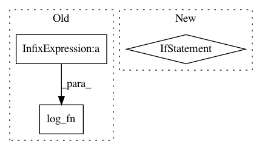

21d5d9ff18e2ebb034e95871e311e5232bbf1826,scripts/tf_cnn_benchmarks/tf_cnn_benchmarks.py,BenchmarkCNN,_benchmark_cnn,#BenchmarkCNN#,917
Before Change
while not global_step_watcher.done():
time.sleep(.25)
log_fn("-" * 64)
log_fn("total images/sec: %.2f" %
(global_step_watcher.steps_per_second() * self.batch_size))
log_fn("-" * 64)
// Save the model checkpoint.
if FLAGS.train_dir is not None and is_chief:
checkpoint_path = os.path.join(FLAGS.train_dir, "model.ckpt")
After Change
log_fn("-" * 64)
log_fn("total images/sec: %.2f" % images_per_sec)
log_fn("-" * 64)
if is_chief:
store_benchmarks({"total_images_per_sec": images_per_sec})
// Save the model checkpoint.
if FLAGS.train_dir is not None and is_chief:
checkpoint_path = os.path.join(FLAGS.train_dir, "model.ckpt")
if not gfile.Exists(FLAGS.train_dir):
gfile.MakeDirs(FLAGS.train_dir)
In pattern: SUPERPATTERN
Frequency: 3
Non-data size: 3
Instances
Project Name: tensorflow/benchmarks
Commit Name: 21d5d9ff18e2ebb034e95871e311e5232bbf1826
Time: 2017-06-02
Author: annarev@google.com
File Name: scripts/tf_cnn_benchmarks/tf_cnn_benchmarks.py
Class Name: BenchmarkCNN
Method Name: _benchmark_cnn
Project Name: tensorflow/benchmarks
Commit Name: 9a20838a7af123340df65b2177b26eb7f8cab316
Time: 2017-06-02
Author: annarev@google.com
File Name: scripts/tf_cnn_benchmarks/tf_cnn_benchmarks.py
Class Name: BenchmarkCNN
Method Name: _benchmark_cnn
Project Name: WZBSocialScienceCenter/tmtoolkit
Commit Name: 4a692df825394a9beda17b7f087427654fbe2351
Time: 2019-06-20
Author: markus.konrad@wzb.eu
File Name: tmtoolkit/bow/bow_stats.py
Class Name:
Method Name: tf_log